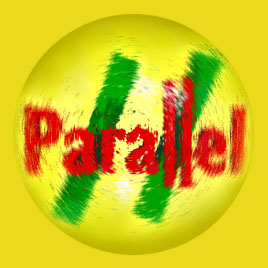

Parallel Gallery
and Journal
http://www.va.com.au/parallel/
parallel@camtech.com.au
Links
- SPEED delivers Myths of Electronic Living
- Artlab and Seiko Mikami present Molecular Clinic 1.0
- Postmodern
Culture
- Join Spike
Webb and his crew in their weekly adventures as they fight
corruption and greed to keep the net safe
- and CTheory
- Refracted Angle Films
- and Cultronix
- the Networked
Writing Environment from the University of Florida, and
- Gregory Ulmer's homepage
- Panic Encyclopedia
- Toy
Satellite's Department Of On-going
Digital Situations (DOODS)
- System X
"computer-mediated communications for computer-mediated artists
"
- and Mark C Thomas' House Of Happy
...
- Globe, an
Australian Journal of Contemporary Visual Arts, comes via Robert Schubert
from the Monash University Visual Arts Department (Clayton
Campus),Melbourne Australia
- Lentil
Death A lo-res,lo-tech,hi-grunge, hi-noise 8-bit 8.0khz stereo
sound space
- Perforations,
and Mediamatic...
- You can download QuickTime VR from
here
- The ANAT (Australian
Network for Art and Technology) site. Forward information...
- geekgirl is always
good
- MkzdK
- Hyperliterature
- The File
Room The Muntadas art and censorship archive project
- ISEA (The
Inter-Society for the Electronic Arts)
- The Marguerite
Duras bibliography, in Finnish and English
- ada web
is always very beautiful and engaging, and presents another superlative
project - Securityland
- EMG (Electric
Media Group) has everything...
- Whats
Hot and Cool is an energetic compilation
- Cool Site of the Day can
often be. Dave
Sag's Mark of Cain homepage
featured there recently
- Vancouver's
avant-vanguard The Western
Front artist centre
- from France: Festival de
Création Multimédia
- The
City of Bits may be a good prelude to Firefly (ex-HOMR) - Your Personal
Music Recommendation Agent...
- The Basement gallery project
- The Mindflux
Project
- Simon
Biggs' homepage
- A Wiliam Burroughs page, and the Lou Reed
page...
- the Spleen ...
Believe ...
- and The Surrealism
Server...
- ...Cyanosis...
- I/O/D
- ...(mind the) gap...
- ...and from Kevin Murray the
exceptionally useful Tram Stop
...
- Telstra (Australia) White
Pages